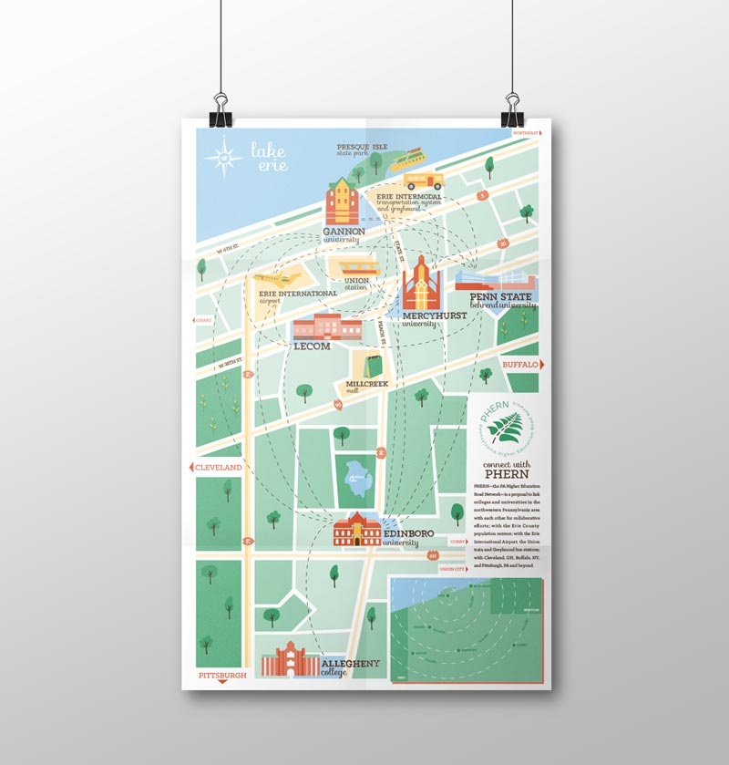

< Prev
Next >
PHERN (Pennsylvania Higher Education Road Network) is a movement created by Erie Civitas to connect universities in Northwestern PA by the means of new bus routes. The hopes for the organization is that this network will allow a greater level of collaboration amongst the universities and surrounding communities.
Made with love and powered with ice cream.